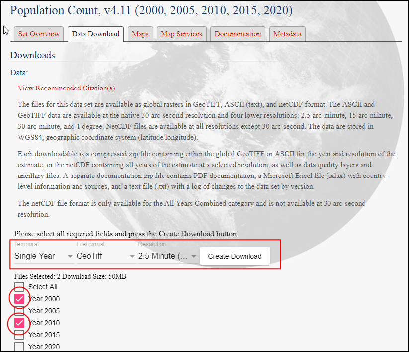

Ujaval Gandhi
Ujaval GandhiEstilos y Análisis Básicos Ráster (QGIS3)¶
Una gran cantidad de observaciones e investigación científica producen conjuntos de datos ráster. Los rásters son esencialmente cuadrículas de píxeles que tienen un valor específico asignado a ellos. Haciendo operaciones matemáticas en esos valores, se puede hacer algunos análisis interesantes. QGIS tiene algunas capacidades básicas de análisis incorporadas mediante la Calculadora Ráster. En este tutorial, exploraremos las opciones disponibles para dar estilo a rásters y la funcionalidad provista por la calculadora ráster.
Vista general de la tarea¶
Usaremos datos grid de población para crear un mapa temático del cambio de población global entre el año 2000 y 2010.
Otras habilidades que aprenderá¶
Cómo copiar/pegar estilos entre capas
Obtener los datos¶
Usaremos el conjunto de datos Gridded Population of the World (GPW) v4 de la Universidad Columbia. Específicamente, necesitamos el Conteo de Población para todo el globo con una resolución de 2,5 Minutos de Grado en formato GeoTIFF y para el año 2000 y 2010. Necesitaremos una cuenta Earth Data para descargar los datos.
Para su comodidad, puede descargar directamente una copia de los conjuntos de datos de los enlaces abajo:
gpw-v4-population-count-rev11_2000_2pt5_min_tif.zip
gpw-v4-population-count-rev11_2010_2pt5_min_tif.zip
Fuente de Datos [GPW4]
Procedimiento¶
Abra QGIS y localice los archivos descargados en el panel Navegador. Expanda el archivo
gpw-v4-population-count-rev11_2000_2pt5_min_tif.zipy arrastre el archivogpw-v4-population-count-rev11_2000_2pt5_min.tifal lienzo.

Se agregará una nueva capa
gpw-v4-population-count-rev11_2000_2pt5_minal panel Capas. De forma similar, localice el archivogpw-v4-population-count-rev11_2010_2pt5_min_tif.zipy arrastre el archivogpw-v4-population-count-rev11_2010_2pt5_min.tifal lienzo.

Exploremos estas capas. Clic en el botón Identificar en el Caja de Herramientas Atributos. Una vez que la herramienta esté seleccionada, clic en cualquier punto en la pantalla.

El valor asociado con ese píxel se mostrará en un nuevo panel Resultados Identificar. En el panel Resultados Identificar, cambie el Modo a
Arriba abajo. Esto mostrará valores píxel de todos los rásters en vez de sólo mostrar la capa más arriba. Compare los valores de ambas capas. Como la resolucion de los rásters es de aproximadamente 5km x 5km, los valores de píxel representan la población total en el área (25 km2) representada por el píxel,

Cierre el panel Resultados Identificar. Creemos una mejor visualización de las capas. Clic en el botón Abrir el panel de Estilo de capas en el panel Capas.

En el panel Estilo de Capas, clic en el menú desplegable Tipo de representación y seleccione el representador
Banda única pseudocolor.

This renderer will style the layer using a color ramp. The default color ramp is white-red where the minimum value will be assigned the white color and the maximum value in the layer will be assigned the red color. The intermediate values will be assigned a shade of red linear interpolation. Expand the Min / Max Value Settings and choose
Cumulative count cutoption. You will see that the map visualization is much better now. The standard data range is set from 2% to 98% of the data values, meaning that the outliers will not be used to set the minimum and maximum values, resulting in a much more representative visualization.

Cierre el panel Estilo de Capa. También podemos aplicar el estilo similar a las otras capas. Pero hay una manera más fácil de transferir los estilos de una capa a la otra. Clic-derecho a la capa
gpw-v4-population-count-rev11_2010_2pt5_miny seleccione .

Ahora haga clic-derecho a la capa
gpw-v4-population-count-rev11_2000_2pt5_minsin estilo y seleccione .

Los mismos parámetros de estilo serán aplicados a la otra capa. Esta funcionalidad es particularmente útil cuando quiere comparar diferentes capas usando la misma categorización. A medida que conmuta la visibilidad de la capa de arriba, puede ver los cambios en población visualmente.

Our task is to create a thematic map of the changes in population. Let’s compute the difference between the 2 layers and create another raster where each pixel represents the change in the population. Go to .

Look for Raster Calculator under Raster Analysis and double-click to open the tool.

Select both the layers using … button as Input Layers. The raster calculator can apply mathematical operations on the raster pixels. In this case we want to enter a simple formula to subtract the 2010 population from 2000. Enter the following expression using ε button. In the expression, The bands are named after the raster name followed by
@and band number. Since each of our rasters have only 1 band, you will see the names with@1appended to the layer name. Keep all the other options as default and save the output layer with the namepopulation_change_2010_2000.tifand click Run.
"gpw_v4_d_count_rev11_2010_2pt5_min@1" - "gpw_v4_population_count_rev11_2000_2pt5_min@1"
Una vez completado se agregará una nueva capa
population_change_2010_2000al panel Capas. Cambiemos el estilo de manera que los cambios positivos y negativos de población sean mejor visualizados. Clic en el botón Abrir el panel Estilo de capa en el panel Capas.

Una opción es usar la técnica de estilo similar a antes y escoger una rampa de color divergente. Clic la lista desplegable Rampa de color y seleccione la rampa
Espectral. Clic la lista desplegable de nuevo y elijaInvertir Rampa de Colorpara asignar azules a los valores bajos y rojos a los valores altos.

Esta es una buena visualización, pero no es fácil de interpretar. Creemos un mejor mapa con 4 categorías discretas,
Declinación,Neutral,CrecimientoyAlto Crecimiento. Deslice hacia abajo a las tablas con clases. Mantenga presionada la tecla Cambio y seleccione todas las filas. Clic el botón Quitar fila(s) seleccionada(s).

Cambie el modo Interpolación a
Discreto. Crearemos manualmente un mapa de color. Clic el botón Añadir valores manualmente. Ingrese-100como el Valor en ``Declinación` como la Etiqueta. Asigne el color azul a esta categoría. La manera en que funciona el mapa de color es que todos los valores menores que el valor ingresado recibirán el color de la entrada. Notará que el lienzo mostrará sólo esas áreas con cambio negativo de población.

Complete el mapa de color con valores apropiados. Yo elegí
100,1000y100000como los límites superiores para las categoríasNeutral,GrowthyHigh Growthrespectivamente. Asigne colores a cada una de las categorías creadas, por ejemplo beige, naranja y rojo.

Una vez que esté satisfecho con la visualización, cierre el panel Estilo de Capa. Ahora tiene un mapa temático global de cambio de población.

If you want to give feedback or share your experience with this tutorial, please comment below. (requires GitHub account)